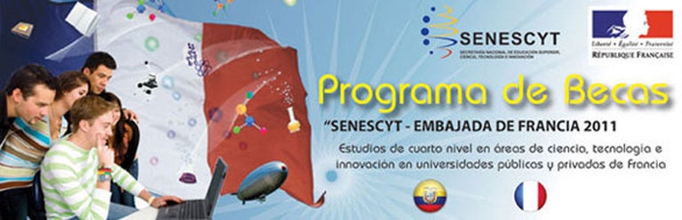
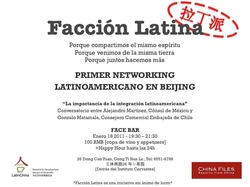

Becas del Gobierno Ecuatoriano
Hola a tod@s!
Lei en el periodico el dia de ayer (Link) de becas que ofrece el gobierno Ecuatoriano en ciertas areas de estudio, para masterados, doctorados e investigaciones en el extranjero.
Para la region de Asia, el monto que se puede entregar es de hasta 66 mil dolares. Las incripciones estan abiertas desde el 20 de Enero hasta el mes de Mayo. Vean en el sitio web http://www.senescyt.gob.ec/ las bases para participar, los estudios que se pueden realizar, las universidades en las que se puede estudiar y todo el proceso.
De lo que lei, necesitan estar en Ecuador para aplicar ya que parte del proceso de seleccion es un examen y una entrevista y la fecha de la entrevista es dada con una semana de anticipacion.
Fijense que en este link http://www.senescyt.gob.ec/ hay otras becas que son dadas por el gobierno Ecuatoriano y Frances en conjunto, estas son solo para estudiar en Francia y requieren tener un nivel intermedio de Frances.
Saludos y feliz festival de primavera!!
Lei en el periodico el dia de ayer (Link) de becas que ofrece el gobierno Ecuatoriano en ciertas areas de estudio, para masterados, doctorados e investigaciones en el extranjero.
Para la region de Asia, el monto que se puede entregar es de hasta 66 mil dolares. Las incripciones estan abiertas desde el 20 de Enero hasta el mes de Mayo. Vean en el sitio web http://www.senescyt.gob.ec/ las bases para participar, los estudios que se pueden realizar, las universidades en las que se puede estudiar y todo el proceso.
De lo que lei, necesitan estar en Ecuador para aplicar ya que parte del proceso de seleccion es un examen y una entrevista y la fecha de la entrevista es dada con una semana de anticipacion.
Fijense que en este link http://www.senescyt.gob.ec/ hay otras becas que son dadas por el gobierno Ecuatoriano y Frances en conjunto, estas son solo para estudiar en Francia y requieren tener un nivel intermedio de Frances.
Saludos y feliz festival de primavera!!
Primer Networking Latinoamericano en Beijing!
{kind=link}
Les adjunto la invitacion que me hicieron llegar desde China-Files, es el dia Martes 18 de Enero a las 7pm.
Amigos,
Los quiero invitar el próximo 18 de enero, al primer networking latinoamericano: Facción Latina. El grupo busca no solo que la comunidad latina se una y se conozca, sino que nos ofrecerá la oportunidad de discutir temas que son interesantes para todos nosotros.
En esta primera edición, discutiremos la integración latinoamericana con una copa de vino y unos appetizers, en Face, uno de los restaurante/bar más lindos de Beijing. Espero que nos acompañen y apoyen esta iniciativa que puede ser muy interesante y útil para toda la comunidad. Creo ciegamente en que la unión hace la fuerza, y que nosotros como región cada vez podremos hacer más con China si nos integramos.
Realizaremos estas reuniones cada dos meses con personajes latinoamericanos representativos en China para que nos cuenten sus experiencias y proyectos. Esta vez, el conversatorio será orientado por el Cónsul de México, Alejandro Martínez, y al Consejero Comercial de la Embajada de Chile, Gonzalo Matamala.
Para que nos conozcamos, nos apoyemos y nos ayudemos!
ESTE EVENTO ES ORGANIZADO POR CHINA FILES, NO POR LA ASOCIACION DE RESIDENTES ECUATORIANOS EN CHINA.
Amigos,
Los quiero invitar el próximo 18 de enero, al primer networking latinoamericano: Facción Latina. El grupo busca no solo que la comunidad latina se una y se conozca, sino que nos ofrecerá la oportunidad de discutir temas que son interesantes para todos nosotros.
En esta primera edición, discutiremos la integración latinoamericana con una copa de vino y unos appetizers, en Face, uno de los restaurante/bar más lindos de Beijing. Espero que nos acompañen y apoyen esta iniciativa que puede ser muy interesante y útil para toda la comunidad. Creo ciegamente en que la unión hace la fuerza, y que nosotros como región cada vez podremos hacer más con China si nos integramos.
Realizaremos estas reuniones cada dos meses con personajes latinoamericanos representativos en China para que nos cuenten sus experiencias y proyectos. Esta vez, el conversatorio será orientado por el Cónsul de México, Alejandro Martínez, y al Consejero Comercial de la Embajada de Chile, Gonzalo Matamala.
Para que nos conozcamos, nos apoyemos y nos ayudemos!
ESTE EVENTO ES ORGANIZADO POR CHINA FILES, NO POR LA ASOCIACION DE RESIDENTES ECUATORIANOS EN CHINA.
Asociación de Residentes Ecuatorianos en China